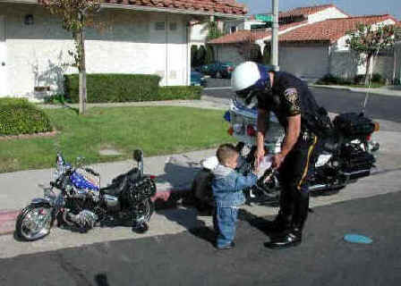
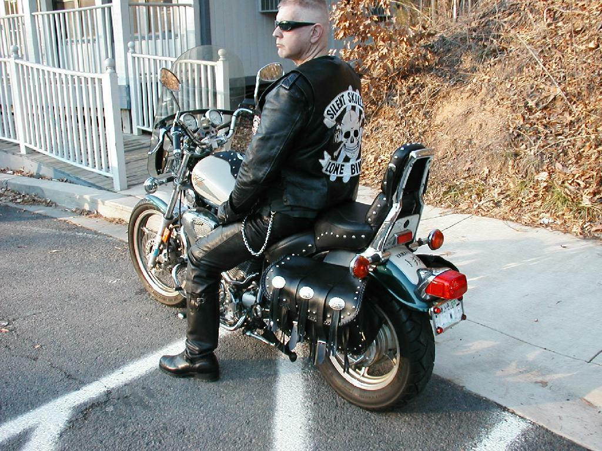
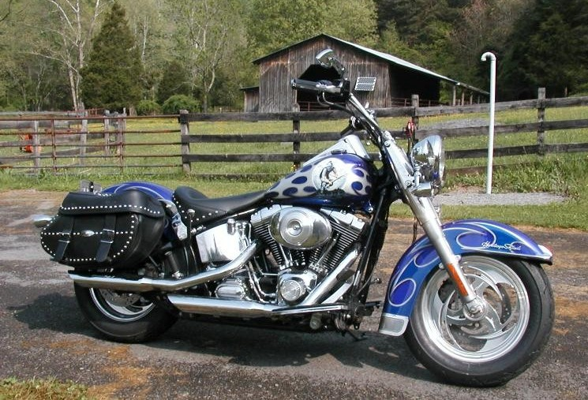
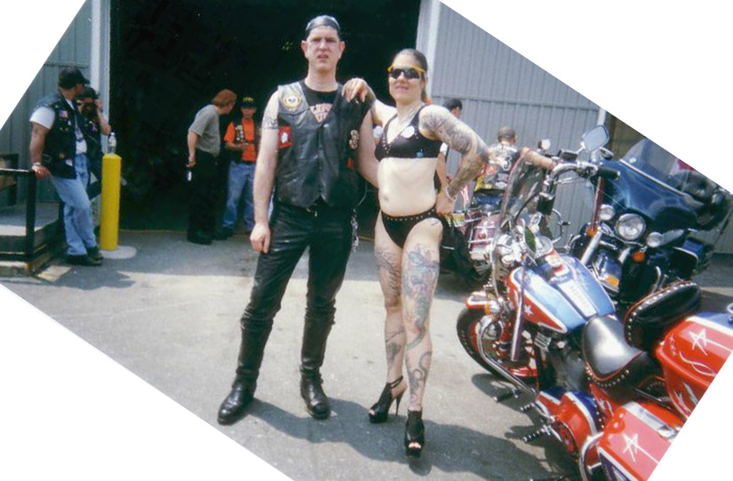
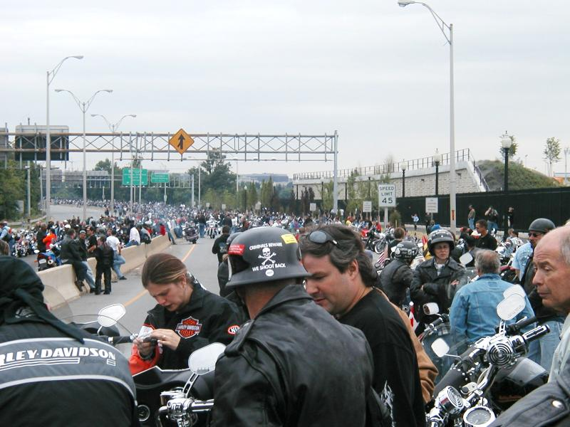
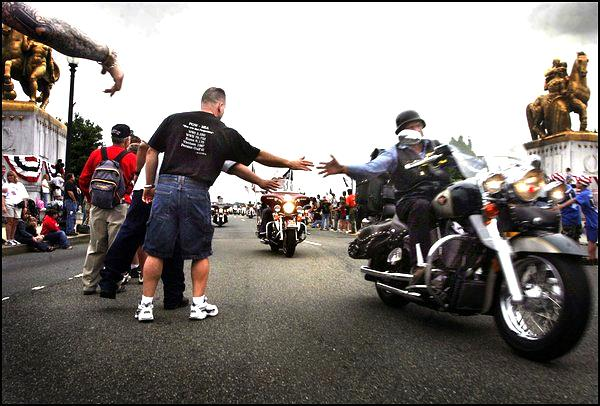
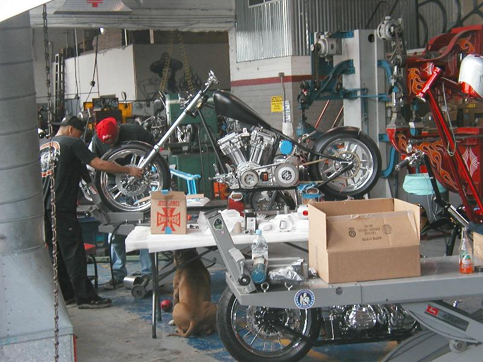
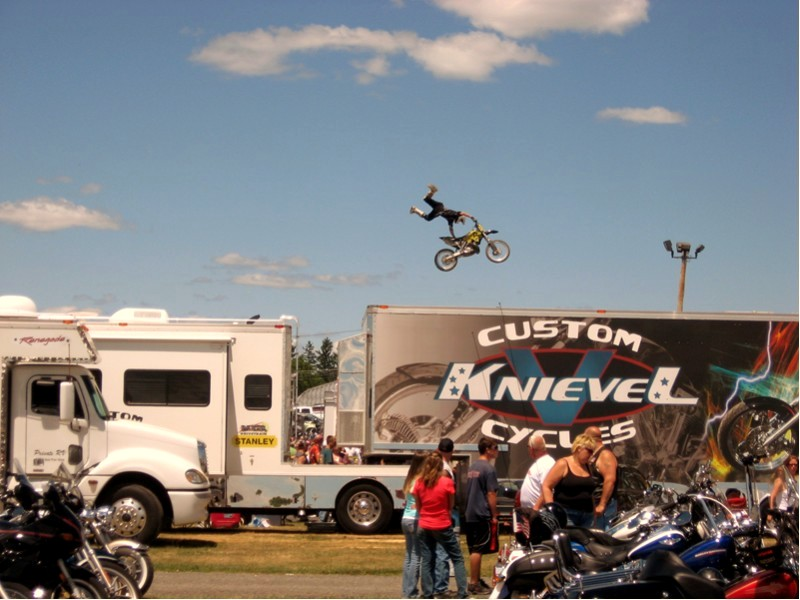
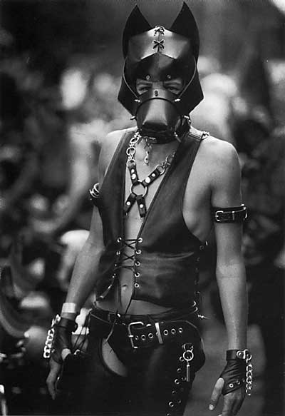

Decided to become an outlaw biker when I was six. (Being a cowboy never appealed to me.) My mother pointed out a biker at a local park--a 50s style black leather outlaw (not today's bearded fatso) with a skull on the back of his motorcycle jacket. My mother said "Isn't that awful?" I silently said, "That's epic."
Or a motorcycle cop. Either way you get to wear kickass gear, carry a gun and give attitude.

To actually get my bike though, I had to wait until my father, mother and wife died. (My father had a bike as a kid and had gone down in gravel along a railroad track in Colorado. He also went through World War II, and I did listen to the part about not joining the military.)
My first bike was a 1995 Virago. Got it used from a guy who bought it then traded it in for a Road Star after a few months. He essentially broke it in for me. I bought a Virago cuz it looked kinda like a Harley but was a lot cheaper. Although the Virago has a reputation as a short person's bike, I found it pretty comfortable to ride for long distances. I also joined an Internet-based bike club called the Silent Skulls. The club takes some guff but actually the members are largely not wannabes but outlaws who aged out of the lifestyle (50s and up). So I kinda get to hang with outlaws on the Web, which is as interesting as hanging out with nonverbal people can be.
You know, Sherman Alexie (the Sherman Alexie, not the other nationally known gay Spokane Indian poet) said that Indians' full-time preoccupation is defining who is and is not a real Indian. Bikers do the same.

The outlaw club I actually would have wanted to join is the Mongols, because they're largely Chicano and are crazy-ass motherfuckers. They won several turf battles with the Angles. There are two books out about the Mongols--one by an ATF agent who infiltrated the San Fernando Valley chapter, and one by the President, which is kind of a rebuttal. The President was a Mexican gangbanger who brought in a lot of other gangbangers into the club. The San Fernando Valley chapter opposed that. (And mira, them putos get infiltrated!)
The President bitched about cop clubs like the Blue Angels and Wild Pigs trying to get the glamor of being bikers without paying the price. There's an Aiel saying, "Take what you want and pay the price." In this case, I've lived by Snoopy's saying "My life is full of unsuffered consequences."
After three years, I broke down and bought a 2003 Softail Heritage Classic on impuse. I'm not an impusive guy, so I surprised myself. The Virago lacked the Harley's aftermarket for parts (couldn't customize) and the social scene. (I joined a local Virago club--with a Chincao president!--but it disintegrated after a fight between two of the members.) The previous owner was a couple into cross-country touring who traded up to a Road King.
Here's the bike as I bought it.


Harley social scene




I also do the Carlyle PA rally (near Gettysburg) and have done Rock the Runway (for a few years after 9/11, they let us do a commemorative ride on the Dulles tarmac). The Carlyle rally is linked off the main page. Also, I did a pilgrimage to West Coast Choppers, which is in the LA 2003 trip pics.
Here's a bike under construction at WCC.


So I still enjoy riding my bike, being a badass in black leather, intimidating people, and fighting, although I haven't gotten to a fight in a bike context--just in kickboxing. There's still time though.
